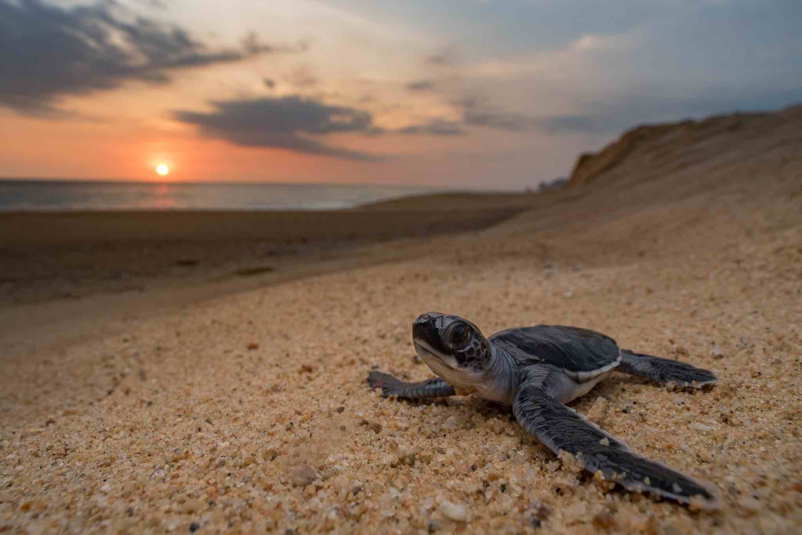
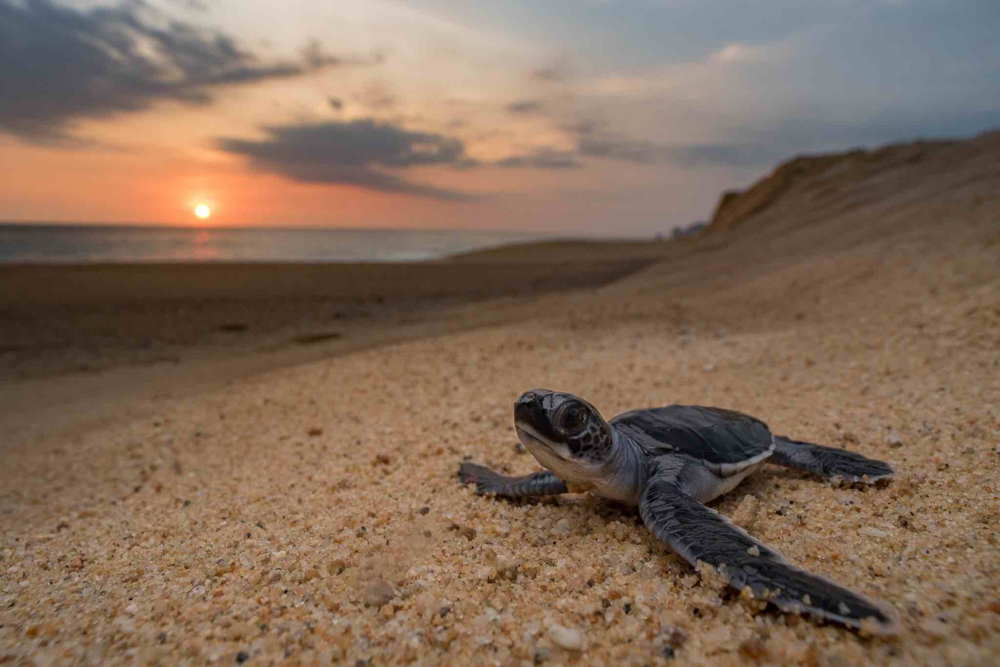

The Sri Lankan turtle population
The Sri Lankan turtle population comprises several species, including the Olive Ridley turtle, Green turtle, Hawksbill turtle, Loggerhead turtle, and Leatherback turtle. These species are considered either critically endangered, endangered, or vulnerable according to the International Union for Conservation of Nature (IUCN) Red List.
Sri Lanka's coastal areas serve as important nesting grounds for these turtle species. The island's sandy beaches provide suitable conditions for nesting, and turtles often travel long distances to reach these sites
 

Our Vision

Our vision is to protect and conserve Sri Lanka's precious turtle populations and their habitats for future generations. We strive to create a sustainable environment where turtles can thrive and contribute to the ecological balance of our coastal ecosystems.
Our mission

We are dedicated to raising awareness among local communities and visitors about the importance of turtle conservation. Through educational programs, workshops, and outreach initiatives, we aim to instill a sense of environmental stewardship and inspire individuals to actively participate in safeguarding turtle populations.
Importance of turtle conservation
There are numerous reasons as to why the conservation of turtles is important. Those include:
- Biodiversity and Ecological Balance: Turtles are an integral part of marine and coastal ecosystems.
- Indicator Species: Turtles serve as indicator species, meaning their population health reflects the overall well-being of their habitats.
- Tourism and Economic Benefits: Many coastal regions around the world, attract tourists interested in experiencing turtle nesting and hatchling releases.
- Keystone Species: Some turtle species, such as the Green turtle, play a keystone role in maintaining the health of seagrass beds.
- Conservation of Endangered Species: Several turtle species are listed as critically endangered, endangered, or vulnerable on the IUCN Red List.
In summary, turtle conservation is vital for preserving biodiversity, maintaining ecological balance, supporting sustainable tourism and local economies, contributing to scientific research, protecting cultural heritage, and safeguarding endangered species. By focusing on turtle conservation, we can address broader environmental concerns and promote the long-term well-being of marine and coastal ecosystems.
Conservation efforts
Shell Savior has made significant efforts in turtle conservation to protect and conserve its turtle populations. Here are some key conservation initiatives in Sri Lanka:
- Turtle Conservation Projects: Numerous turtle conservation projects and hatcheries have been established along the Sri Lankan coastline.
- Community Involvement: Engaging local communities in turtle conservation is crucial for the success of conservation efforts.
- Nest Protection and Monitoring: Sri Lanka has implemented measures to protect turtle nesting sites.
- Awareness and Education: Public awareness campaigns and educational programs are conducted to inform both locals and visitors about the importance of turtle conservation.
These conservation efforts demonstrate a commitment to protecting and conserving the country's turtle populations. By combining community involvement, research, education, and policy measures, we aim to ensure the long-term survival and recovery of its turtle species.